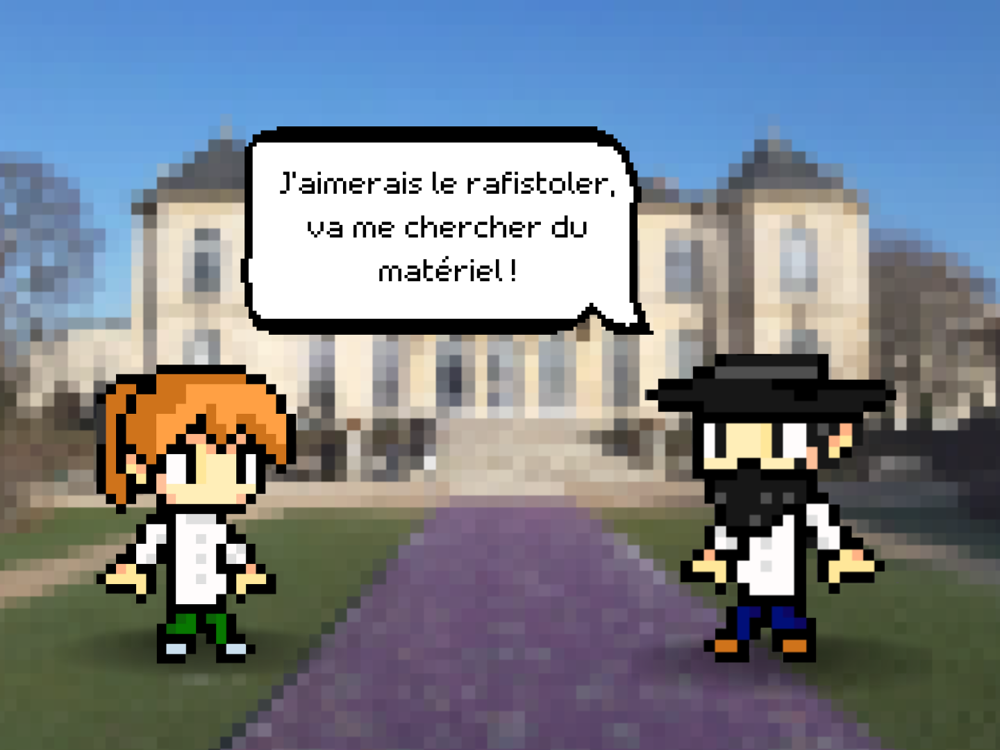
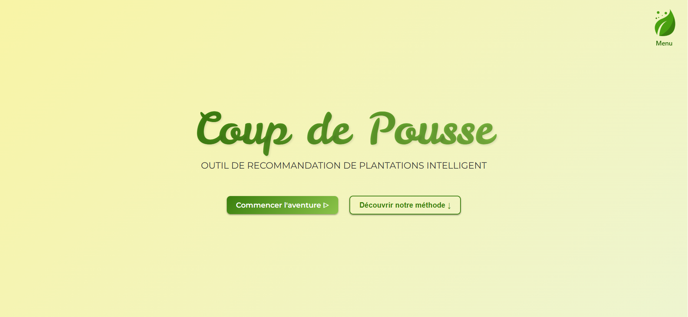

Mes projets


2024
L'opinion publique sur les nouvelles technologies : une remise en cause du progrès technique ?
Analyse de données

2024
Prédire le prix d'une maison
Prédiction de données

2026
La publicité dans la presse générale et professionnelle
Analyse de données descriptives

2024
Jeu vidéo sur le sculpteur Rodin
Jeu vidéo

2026
Les collaborations universitaires entre les États-Unis et la France
Analyse de données

2026
Étude de marché des porcelaines de Sèvres
Analyse de données

2026
Coup de Pousse - Outil de génération de plan de jardinage
IA

2024
L'opinion sur la peine de mort
Analyse de données